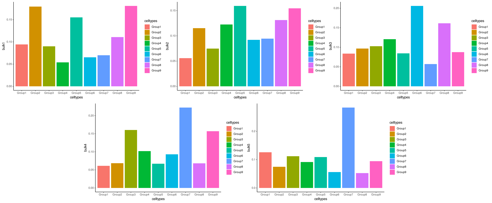

Quick set up and example
a1_Intro_to_ConDecon.RmdConDecon is a clustering-independent method for estimating cell abundances in bulk tissues using single-cell omics data as reference. In this tutorial, we will apply ConDecon to simulated transcriptomic data and visualize the expected results.
As a reference dataset, we will use simulated single-cell RNA-seq data containing 9 clusters/groups (gps). This data was generated using the software Splatter. We will start by loading the single-cell count and meta data provided by the ConDecon package.
# Single-cell gene expression count data
data(counts_gps)
# Single-cell PCA latent space
data(latent_gps)
# Top 2,000 variable genes
data(variable_genes_gps)
# Meta data of single-cell RNA-seq data
data(meta_data_gps)
# Visualize the cluster annotations of the single-cell RNA seq data
ggplot(data.frame(meta_data_gps), aes(x = UMAP_1, y = UMAP_2, color = celltypes)) +
geom_point(size = 1.5) +
theme_classic()We will use ConDecon to deconvolve 5 simulated bulk transcriptomic profiles.
# Bulk gene expression data, normalized by TPMs
data("bulk_gps")‘RunConDecon’ is the main function necessary to infer cell abundances for each input bulk sample. This function requires 4 inputs:
- Single-cell count matrix
- Single-cell latent space matrix
- Character vector of variable features associated with the single-cell data
- Normalized bulk data matrix
The output of this function is a ConDecon object containing a Normalized_cell.probs matrix with the predicted cell probability distributions.
ConDecon_obj = RunConDecon(counts = counts_gps,
latent = latent_gps,
variable.features = variable_genes_gps,
bulk = bulk_gps,
dims = 10)
#> Warning in pdist::pdist(t(cond$TrainingSet$bulk_coefficients),
#> t(cond$TrainingSet$bulk_coefficients)): Y is the same as X, did you mean to use
#> dist instead?With ‘PlotConDecon’, we can visualize the relative cell probabilities of each of the 5 bulk samples.
PlotConDecon(ConDecon_obj = ConDecon_obj,
umap = meta_data_gps[,c("UMAP_1", "UMAP_2")])
To visualize the actual cell probabilities in each sample we can set
relative=F in the above command:
PlotConDecon(ConDecon_obj = ConDecon_obj,
umap = meta_data_gps[,c("UMAP_1", "UMAP_2")], relative = F)We can compare ConDecon’s predictions to the true cell type proportions of each simulated bulk sample.
data(true_prop_gps)
for(i in 1:5){
plot(ggplot(data=true_prop_gps, aes_string(x="celltypes", y=paste0("bulk", i),
fill = "celltypes")) +
geom_bar(stat="identity") +
theme_classic())
}